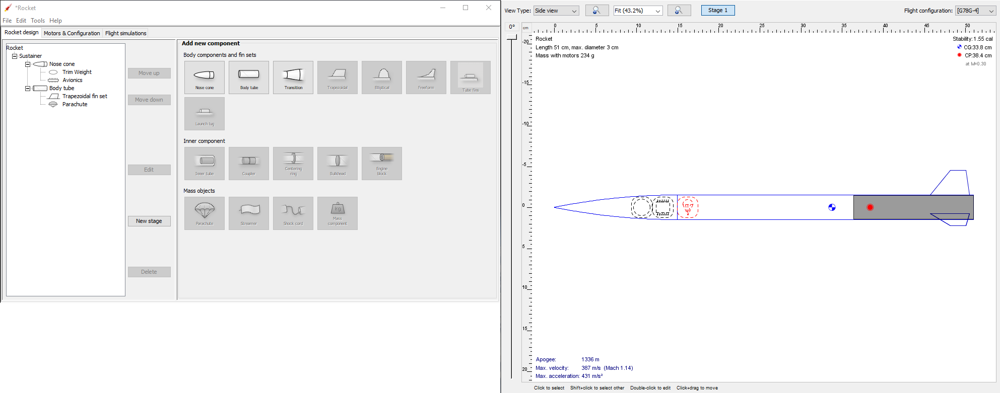
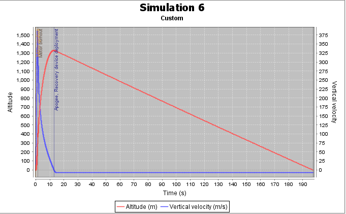
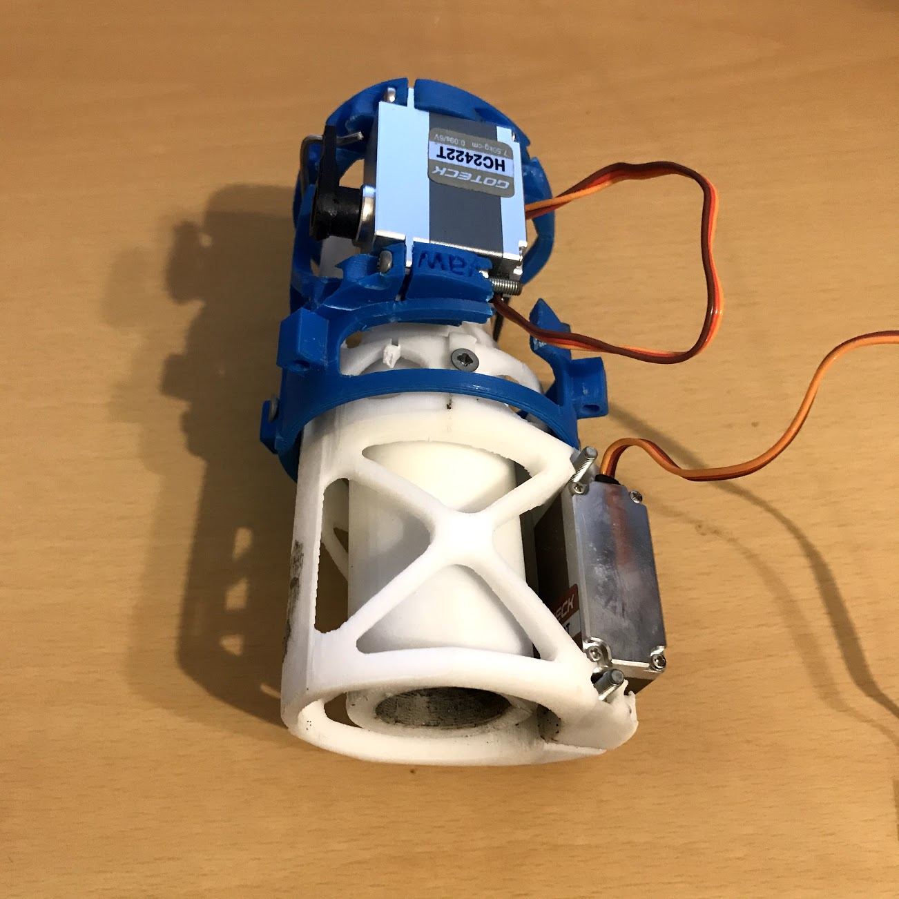
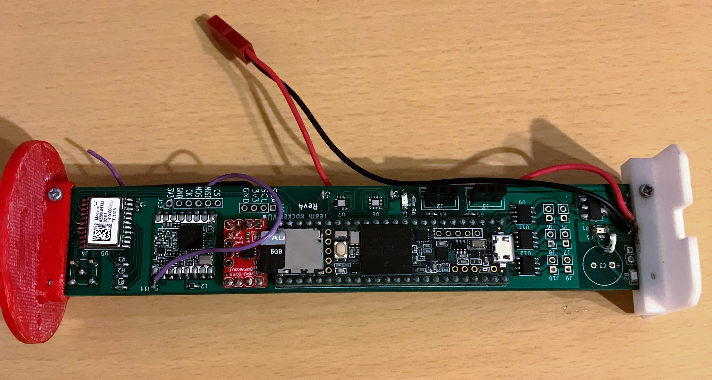
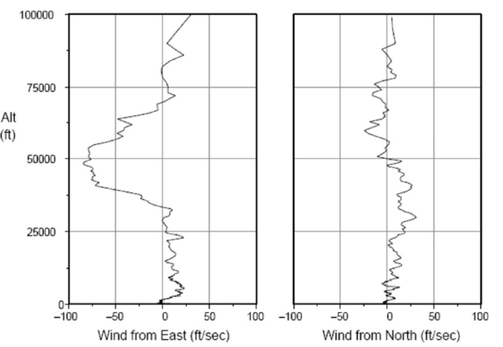
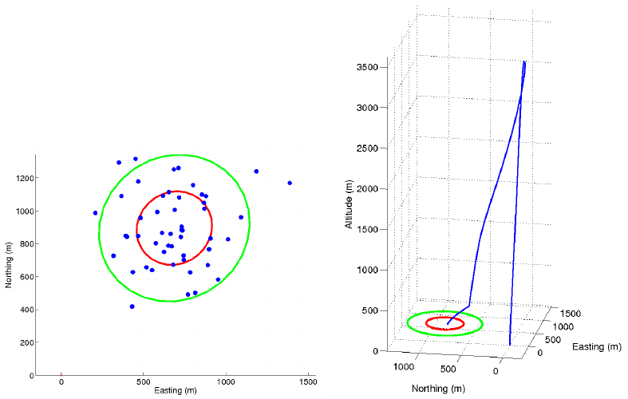

Rocket Project Introduction
Simple rocket design

Simple rocket design
Simple rocket design
The Project
P1 - Avionics and Control
P2 - Mission Control
P3 - Rocket Simulation - Monte Carlo
P3 - Rocket Simulation - Control
The Past
The Past
P1 - Avionics

P1 - Avionics
P1 - Avionics
P2 - Mission Control
P3 - Rocket Simulation - Monte Carlo
Range safety requirements and methods for sounding rocket launches
P3 - Rocket Simulation - Monte Carlo
Box, Simon & Bishop, Christopher & Hunt, Hugh. (2010). A Stochastic Six-Degree-of-Freedom Flight Simulator for Passively Controlled High Power Rockets. Journal of Aerospace Engineering - J AEROSP ENG. 24. 10.1061/(ASCE)AS.1943-5525.0000051.
P3 - Rocket Simulation - PID Tuning